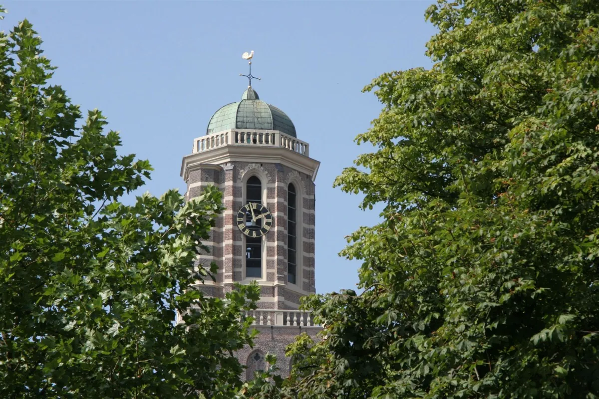
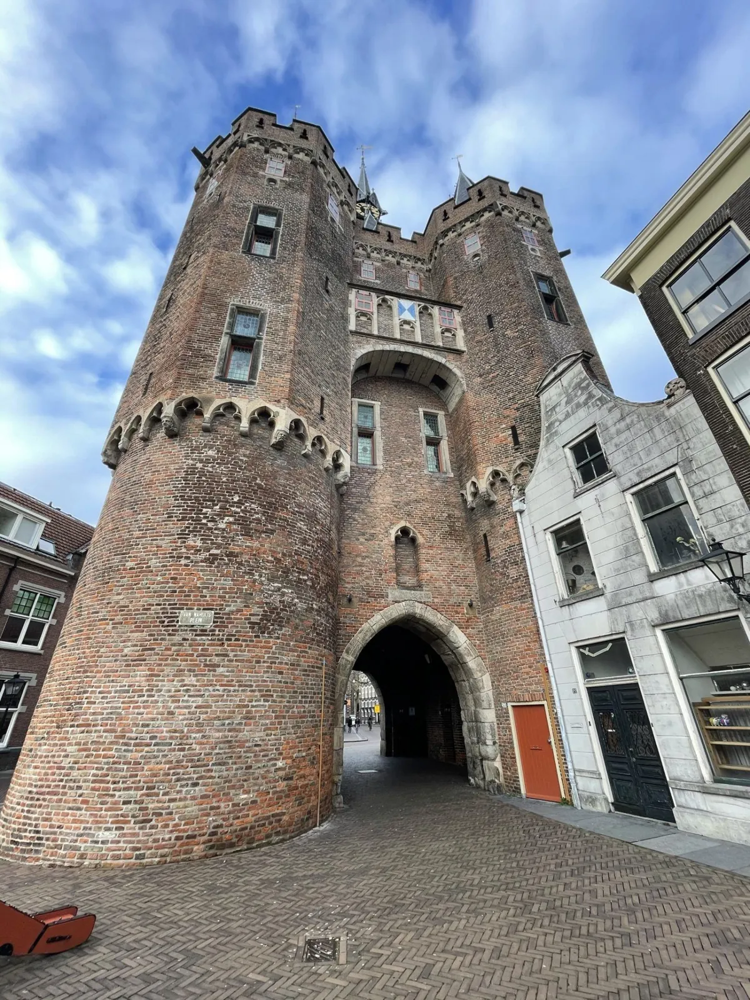
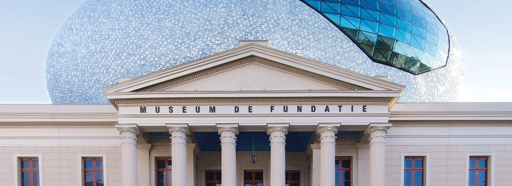
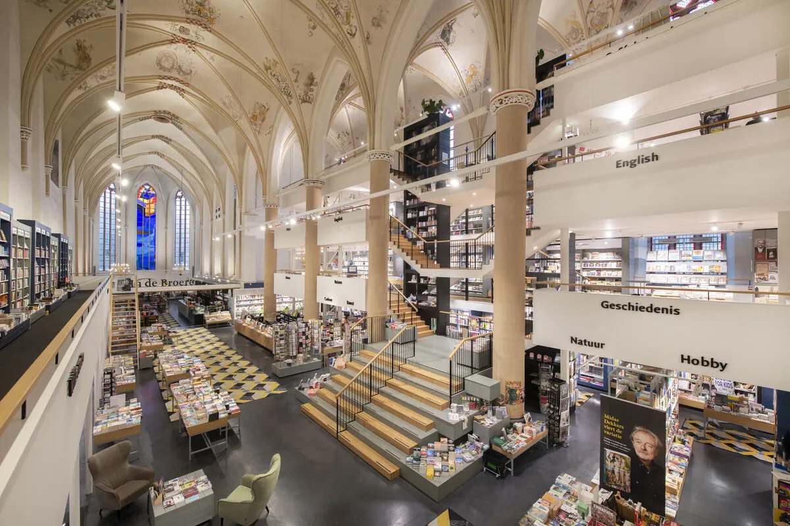
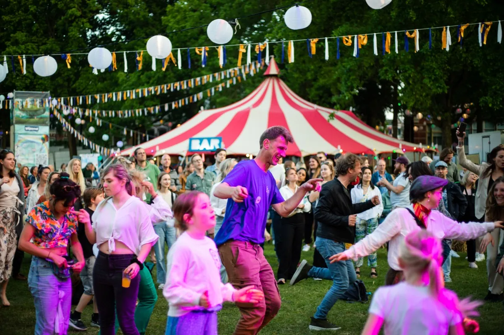
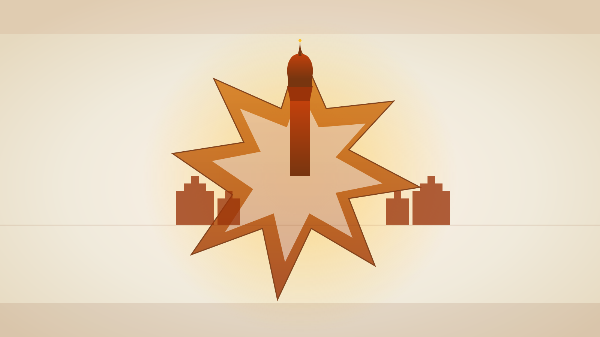
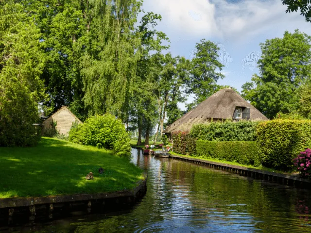
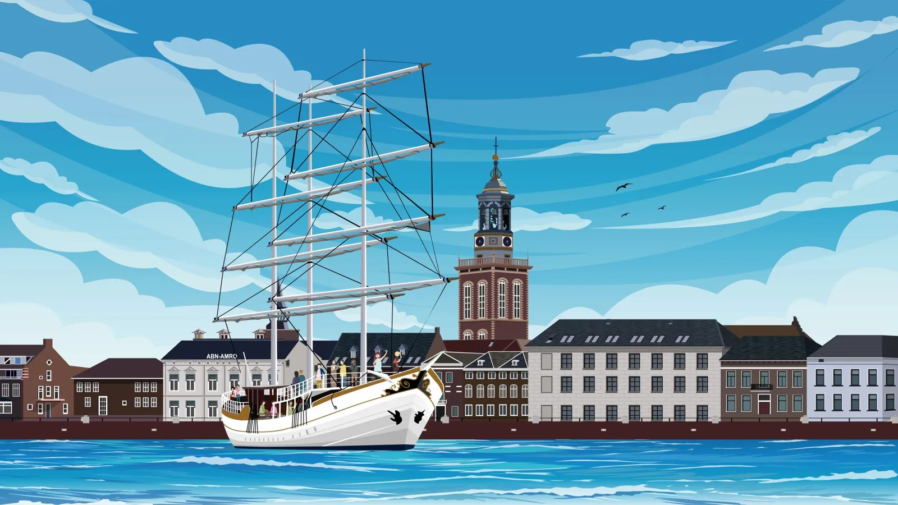
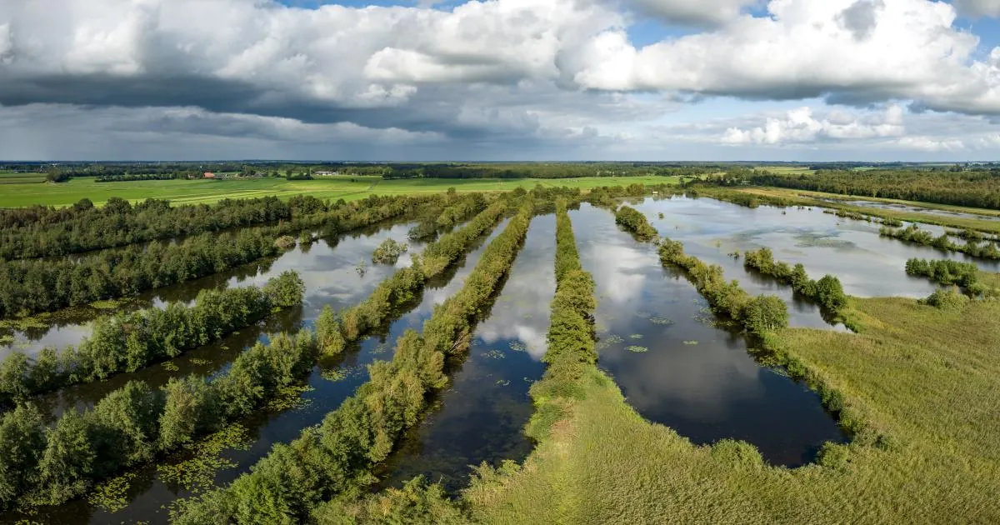

Lock De Librije first — reservations routinely go months out [12] — then pick a weekend inside the 29 May – 7 June Unlimited window [6], and if travel is flexible to Thursday–Sunday, schedule against the Spoorzone calendar to ride one tech event into the trip's front half [10]. Book the attached 19-room hotel with the table — a post-pairing midnight transfer becomes a flight of stairs.








